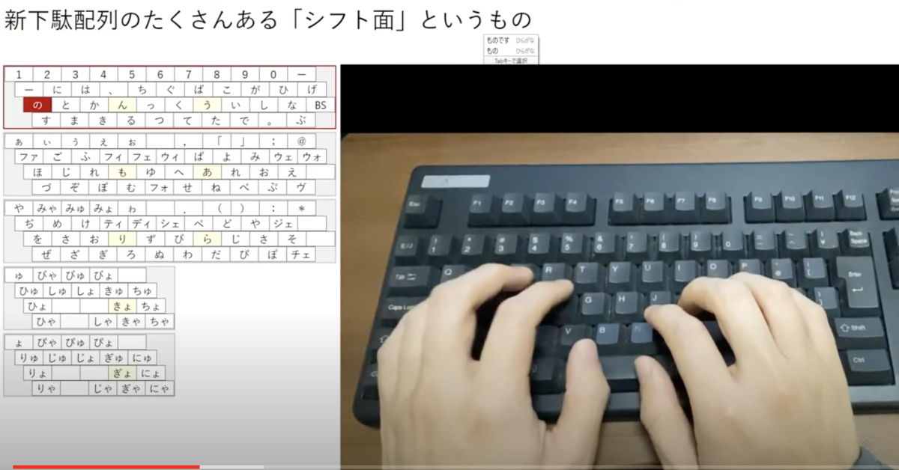

投稿日: 2020/11/16 01:35:03
カテゴリ: 新下駄配列
サムネイル: 
さて、まだまだ練習中の身ではあるものの、一旦の区切りを付ける意味で、YouTubeに新下駄配列で打っている様子を上げてみた。
自分で見てもたどたどしくて、結構打ち間違いが多くて恥ずかしい限りではあるものの、新下駄配列というものがどういうものなのかを知ってもらうには十分雰囲気がわかる内容に仕上がっているかなと思う。
ちなみに、この動画を作成するにあたって、複数あるシフト面をわかりやすく可視化するためのツールとして自作したものがこれ。本当は手元にオーバーレイする形で可視化したかったのだけれど、シフト面が多いのでさすがにオーバーレイすると分かりづらそうだったので、シフト面を分けて可視化するかたちをとった。
ちなみにこのツールは、ソースを見てもらえばわかるけど単純なhtmlファイル1つになっていて、特にエミュレータに依存する作りにはなっていないので、他の入力方式を可視化するのにも使えると思う。
それにしても、やっぱりこうやって動画になるといろいろと赤裸々になるもので、自分がまだシフト面のすべてを暗記しきれていないことも露呈するし、左右のキーをよく逆に打ったり、拗音拡張を打ち間違える様子もわかる。
よく出てくる組み合わせについては段々と熟練度が上がっていってはいるものの、やっぱりあまり入力しない単語は依然としてミスタイプが減っていないので、精進あるのみだなと思う。
…とはいえ、PC版のフリック入力といったノリで使うために始めた、一種の気晴らしとしてのかな入力なので、また気が向いたときに気ままに練習するスタイルは変わらないかな。
それでこそ続いていってる感もあるし、「楽しく入力するための」かな入力なので、ぼちぼち継続していけたら嬉しい。
…とはいえ、やっぱりスマホのフリック入力みたいに速く入力できるようになりたいなという思いも当然あって、今の、休日に長い時間かけてゆっくり書くための入力方式から、やろうと思えば高速にも打てる方式として、ステップアップしていけたらなと思う。
最近その敷居として感じるのは、当然練習不足のミスタイプもあるけれど、両手同時打ちが結構スピード的にネックだなと思い始めてきた。
これは親指シフトや薙刀式を試しに練習していた頃に感じていたことと同じ悩みで、特に中指・薬指シフトが連続する打鍵はやっぱり辛い。
とはいえ、これは自分が速度面よりも長時間打鍵を優先してこの入力方式を選択した結果としての、「指がしゃべる」入力方式、つまり1モーラ1打鍵にこだわったがためのトレードオフなので、まあ仕方がないかなとも思う。
多分ミスタイプがなくなってきた頃に、本当の入力速度がわかってくるだろうと思うので、それこそ気長に待ってみようかな。